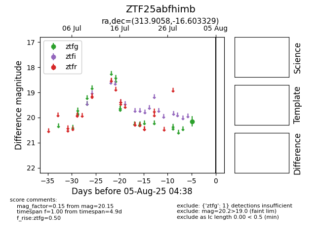

Target ZTF25abfhimb at 2025-08-05 04:38, see:
FINK: fink-portal.org/ZTF25abfhimb
Lasair: lasair-ztf.lsst.ac.uk/objects/ZTF25abfhimb
ALeRCE: alerce.online/object/ZTF25abfhimb
alt names
ZTF25abfhimb (ztf,fink)
coordinates:
equatorial (ra, dec) = (313.9058,-16.60333)
galactic (l, b) = (30.9126,-34.76081)
photometry
last ztfg=20.15
1 ztfg detections
